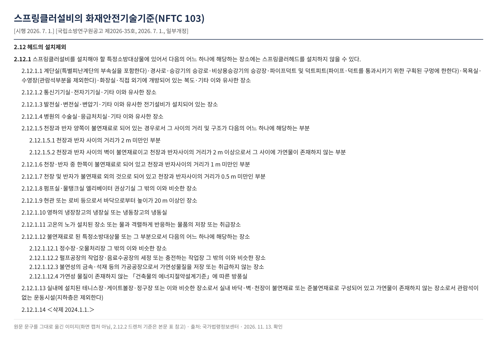
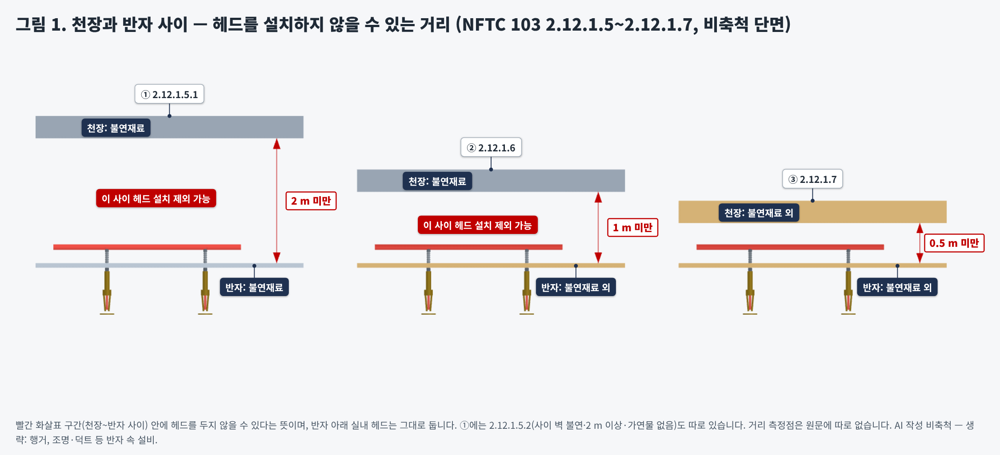
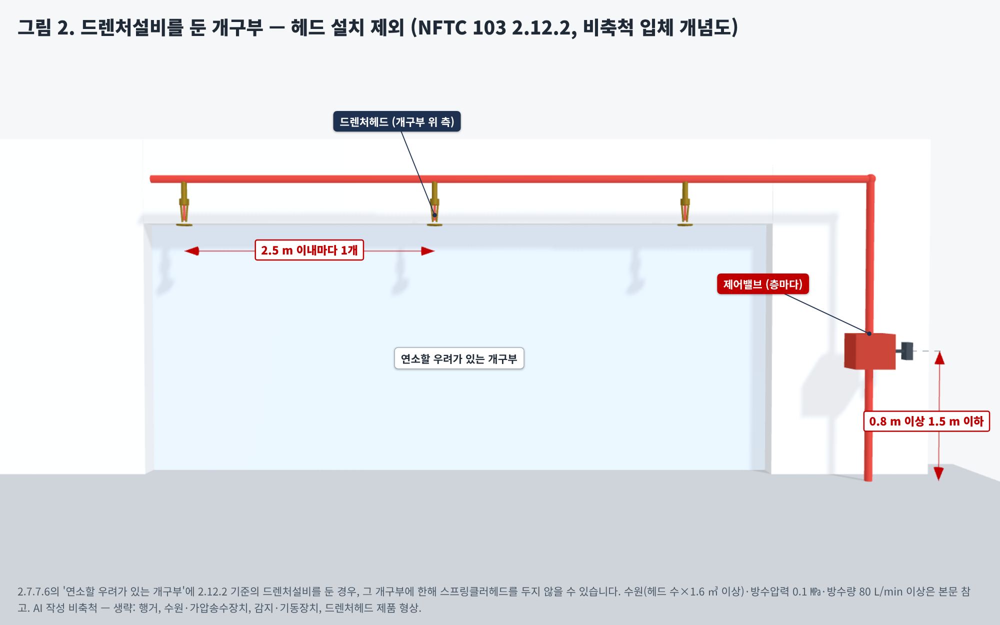

여기는 스프링클러헤드를 안 달아도 될까요? — NFTC 103 2.12 헤드 설치 제외 장소
왜? 물로 끄기 어렵거나(효과), 물 때문에 더 큰 피해가 나거나(2차 피해), 불날 위험이 적은 곳까지 헤드를 강제하지 않으려는 기준입니다(NFPC 103 제15조).
1. 공식 기준 원문 (NFTC 103, 현행)
2.12.1 스프링클러설비를 설치해야 할 특정소방대상물에 있어서 다음의 어느 하나에 해당하는 장소에는 스프링클러헤드를 설치하지 않을 수 있다.
2.12.1.5 천장과 반자 양쪽이 불연재료로 되어 있는 경우로서 그 사이의 거리 및 구조가 다음의 어느 하나에 해당하는 부분
2.12.1.5.1 천장과 반자 사이의 거리가 2 m 미만인 부분
2.12.1.5.2 천장과 반자 사이의 벽이 불연재료이고 천장과 반자사이의 거리가 2 m 이상으로서 그 사이에 가연물이 존재하지 않는 부분
2.12.1.6 천장·반자 중 한쪽이 불연재료로 되어 있고 천장과 반자사이의 거리가 1 m 미만인 부분
2.12.1.7 천장 및 반자가 불연재료 외의 것으로 되어 있고 천장과 반자사이의 거리가 0.5 m 미만인 부분
2.12.2 2.7.7.6의 연소할 우려가 있는 개구부에 다음의 기준에 따른 드렌처설비를 설치한 경우에는 해당 개구부에 한하여 스프링클러헤드를 설치하지 않을 수 있다.
위 상자는 핵심 조항만 옮겼습니다. 2.12.1.1~2.12.1.14 전체는 아래 원문 이미지와 2절 표에 있습니다. 성능기준 「스프링클러설비의 화재안전성능기준(NFPC 103)」(소방청고시 제2025-25호, 2026. 3. 1. 시행) 제15조는 원문이 "소화효과를 기대할 수 없는 장소이거나 2차 피해가 예상되는 장소 또는 화재 발생 위험이 적은 장소"(제1항)와 드렌처설비를 적합하게 설치한 개구부(제2항)로 정하고, 구체적인 장소는 NFTC 103 2.12에 있습니다.
원문 이미지

2. 적용 조건 — 장소별 정리
| 조항 | 원문 장소 | 볼 것 |
|---|---|---|
| 2.12.1.1 | 계단실(특별피난계단 부속실 포함)·경사로·승강기 승강로·비상용승강기 승강장·파이프덕트 및 덕트피트·목욕실·수영장·화장실·직접 외기에 개방된 복도 등 | 덕트피트는 "구획된 구멍에 한한다", 수영장은 "관람석부분을 제외한다" |
| 2.12.1.2~4 | 통신기기실·전자기기실 / 발전실·변전실·변압기 등 전기설비 장소 / 병원 수술실·응급처치실 등 | "기타 이와 유사한 장소" 범위 |
| 2.12.1.5~7 | 천장과 반자 사이 | 재료(불연 여부)와 거리 — 아래 그림 1 |
| 2.12.1.8 | 펌프실·물탱크실·엘리베이터 권상기실 등 | |
| 2.12.1.9 | 현관 또는 로비 등으로서 바닥으로부터 높이가 20 m 이상인 장소 | 높이 기준 |
| 2.12.1.10~11 | 영하의 냉장실·냉동실 / 고온의 노가 설치된 장소·물과 격렬하게 반응하는 물품의 저장·취급장소 | |
| 2.12.1.12 | 불연재료로 된 대상물·부분으로서 정수장·오물처리장, 펄프공장 작업장·음료수공장 세정·충전 작업장, 가연성물질을 저장·취급하지 않는 불연성 금속·석재 가공공장, 가연성 물질이 없는 방풍실 | "불연재료로 된" 전제가 먼저 |
| 2.12.1.13 | 실내 테니스장·게이트볼장·정구장 등 | 바닥·벽·천장 불연/준불연, 가연물 없음, 관람석 없음, 지하층 제외 — 모두 충족 |
| 2.12.1.14 | ＜삭제 2024.1.1.＞ | 5절 참고 |
| 2.12.2 | 2.7.7.6의 연소할 우려가 있는 개구부 | 드렌처설비를 둔 경우, 그 개구부에 한해 — 그림 2 |
① "않을 수 있다"는 선택입니다. 원문은 "설치하지 않을 수 있다"고 씁니다. 설치를 금지하는 문구가 아니므로, 제외할지는 설계자가 근거를 남기고 판단하는 부분입니다(의견).
② 천장·반자 사이는 '재료 + 거리'를 함께 봅니다. 양쪽 불연이면 2 m 미만, 한쪽만 불연이면 1 m 미만, 양쪽 모두 불연재료 외이면 0.5 m 미만일 때 그 사이(반자 속)에 헤드를 두지 않을 수 있습니다. 양쪽 불연이면서 2 m 이상이어도 사이 벽이 불연재료이고 가연물이 없으면 제외할 수 있습니다(2.12.1.5.2).
③ 드렌처는 '그 개구부'에만. 2.12.2는 드렌처설비를 기준대로 둔 개구부에 한해 헤드를 빼는 규정입니다. 기준은 드렌처헤드 개구부 위 측 2.5 m 이내마다 1개, 제어밸브(일제개방밸브·개폐표시형밸브·수동조작부) 층마다 바닥에서 0.8 m 이상 1.5 m 이하, 수원 = 가장 많이 설치된 제어밸브의 헤드 수 × 1.6 ㎥ 이상, 그 헤드 동시 사용 시 헤드선단 0.1 ㎫ 이상·80 L/min 이상, 가압송수장치는 점검이 쉽고 재해 피해 우려가 없는 장소(2.12.2.1~2.12.2.5)입니다.
3. 그림으로 보기


그림은 모두 AI(Claude)로 그린 비축척 개념도입니다. 그림 1의 높이 차이는 비교용으로 과장했고, 반자 속 배관·헤드 연결은 예시입니다. 그림 2의 개구부 크기·헤드 수·밸브 형상은 예시이며, 수원·가압송수장치·기동장치·행거는 생략했습니다. 설치 적합 판정용 도면이 아닙니다.
판단 기준점 주의: 원문은 "천장과 반자 사이의 거리"를 어디서 어디까지 재는지(슬래브 하단~반자 상단 등) 따로 정하지 않습니다. 보·덕트가 있는 반자 속, 부분적으로 재료가 다른 천장, "기타 이와 유사한 장소"의 범위는 해석이 갈릴 수 있으니 관할 소방서에 먼저 확인하세요.
4. 단계별 확인사항
| 단계 | 확인할 것 |
|---|---|
| 설계 | 제외 장소마다 해당 조항(2.12.1.x)을 도면·계산서에 표기. 천장·반자 사이는 천장·반자 재료(불연 여부)와 사이 거리를 단면도로 남김. 드렌처로 대체하는 개구부는 2.12.2.1~2.12.2.5 수치를 계산서에 반영 |
| 시공 | 반자 재료가 설계(불연/불연 외)와 같은지. 반자 높이 변경으로 천장~반자 거리가 기준을 넘지 않았는지. 드렌처헤드 간격 2.5 m 이내, 제어밸브 높이 0.8~1.5 m |
| 감리 | 2.12.1.5.2 적용 부분은 사이 벽 불연재료·가연물 없음을 현장에서 확인. 2.12.1.13 운동시설은 관람석 유무·지하층 여부·마감재 확인. 덕트피트가 '구획된 구멍'인지 |
| 유지관리·점검 | 용도 변경(전기실→창고, 로비→매장 등)이나 반자 속 가연물 반입으로 제외 근거가 사라졌는지. 드렌처 제어밸브 조작 가능 여부와 개폐 표시 |
5. 적용 시점과 경과조치(연혁 대조)
현행본: 국립소방연구원공고 제2026-35호(2026. 7. 1. 시행).
연혁 대조: NFTC 103 제정본(소방청공고 제2022-210호, 2023. 2. 10. 시행)과 현행본의 2.12를 국가법령정보센터에서 대조했습니다. 2.12.1.1~2.12.1.13과 2.12.2(2.12.2.1~2.12.2.5)는 문구가 같습니다. 달라진 것은 하나입니다.
| 조항 | 제정본(2023. 2. 10. 시행) | 현행본 |
|---|---|---|
| 2.12.1.14 | 「건축법 시행령」 제46조제4항에 따른 공동주택 중 아파트의 대피공간 | ＜삭제 2024.1.1.＞ |
현행 「공동주택의 화재안전기술기준(NFTC 608)」(국립소방연구원공고 제2026-40호, 2026. 7. 1. 시행) 2.3.1.8에는 "「건축법 시행령」제46조제4항에 따라 설치된 대피공간에는 헤드를 설치하지 않을 수 있다."는 문구가 있습니다. 즉 아파트 대피공간은 지금은 NFTC 608에서 봅니다. 삭제를 정한 공고 번호와 그 부칙(경과조치)은 이번에 따로 확인하지 못했습니다. NFTC 103 이전의 「스프링클러설비의 화재안전기준(NFSC 103)」 시절 문구도 대조하지 않았습니다.
공식 원문 링크
· 스프링클러설비의 화재안전기술기준(NFTC 103) 현행 — 국립소방연구원공고 제2026-35호
· NFTC 103 제정본 — 소방청공고 제2022-210호(2023. 2. 10. 시행)
· 스프링클러설비의 화재안전성능기준(NFPC 103) 현행 — 제15조(헤드의 설치제외)
· 공동주택의 화재안전기술기준(NFTC 608) 현행 — 2.3.1.8 대피공간
2026. 11. 13. 국가법령정보센터 원문 기준으로 작성했습니다. 기준은 개정될 수 있으니 적용 시점의 원문을 확인하세요.